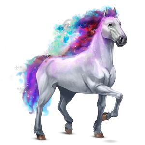
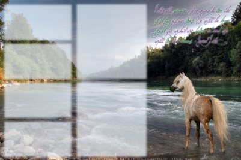
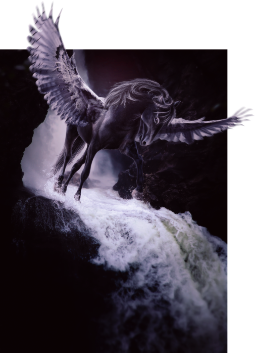

hobbiesvideo games (esp. JRPGs), language learning, knitting, crochet, cross stitching, reading and listening to audiobooks, gif makinglikeslemon flavored desserts, hoarding stationary despite primarily writing digitally, candles, reading about stuff i don't understand or don't agree with, collecting perfume samples, statistical theory, open source software, tinkering and customizing, big cities, aldi brand oat milkdislikescloudy winter days, postmodernism, humidity, consumerism, insects, dni lists, baths, subscriptions, videos becoming the default form of communication onlinefun facts
my first jrpg was final fantasy 8, which i found when i was at a garage sale with my mom when i was 8. i think i've been a weeb ever since
i have a degree in statistics and work as a data analyst as my day job, so i'm never far from my beloved computer
← actual photo of me working btw
hi! my name is melissa and i'm just another weirdo on the internet. i've been terminally online since before i was 10, stumbling upon sketchy chat rooms and discovering what smut was through warriors cat fanfiction. i suppose it wasn't enough to scare me off since i'm still here more than 15 years later. even though i've been on the internet for a long time, sometimes i feel like i can't be myself in other places... modern social media feels almost suffocating to me. when i discovered neocities, lurking on random strangers' sites i realized i don't really enjoy being that social online but i DO really enjoy learning about others, reading their thoughts, and peering into their mind for a moment in time even if i don't agree with them or we don't have that much in common. it inspired me to be more honest in the way i blog online, and i figured a site built by myself, for myself would be the best way to share all my thoughts and talk about my favorite things more freely, presented in more fun and creative ways that what's possible on mainstream sites and without thought to who will see it, how they'll react, or how much engagement it gets.
my history on the internet (cringe cw)
i don't really remember how or why i started using the internet recreationally – my memories of childhood are pretty patchy already and i started really young. i remember loving dress-up and escape room games as a kid; i would spend hours after school on the shared computer in the family room on those sites, only getting off right before my dad would get home from work and inevitably tell me to log off. a friend of mine with similar interests was obsessed with webkinz and tried to introduce me to it, but my parents didn't understand why i had to buy a special plushie just to use a site when i already had perfectly good ones.

one of divine horses. oh how i coveted her when i was 11...
i went searching for free alternatives, and while i tried more popular sites like neopets and poptropica, the one i really got into was a site called howrse. it's an online horse breeding simulation game, and notable for being my introduction to html. everyone had a profile page where you could introduce yourself and your 'stable', and it allowed images and some html. using 'layouts', basically html tables with background or header images, was really popular among the player base. you can see examples of what i'm talking about here and here. i think i spent more time tinkering with my page than actually playing the game, lol. one of the first photo manipulated layouts i madewhile the game was free to play, a lot of stuff was locked behind either micro-transactions or huge time sinks, which makes sense as apparently howrse is owned by ubisoft. anyways, since the playing with layouts was free and only limited by your creativity and not your wallet, i got really into making them. there was a subculture of people who didn't just take photos off google and put them in html tables, but photoshopped their own images to put textboxes above them. this was how i got into photoshop (i used GIMP at the time) and deviantart, where the most dedicated editors posted their work.

one of last photomanips i ever madeeventually making layouts turned into focusing on the photomanipulations themselves. before i joined dA i had no idea that photoshopping images could be its own form of art, but there really is a lot of skill and creativity that goes into picking the right stock images, cutting things cleanly, adjusting composition and lighting, and painting the details. i remember in seventh grade i asked for a wacom tablet for my birthday to help with that last bit, which i still have (it still works!)
while my interest in howrse and photomanipulation waned as i got closer to high school, i did find another site that kept my interest in coding and photoshop alive – tumblr. i remember that i joined when i was 12 1/2 because i used my half birthday instead of my real one to be able to join. i quickly got interested in learning how to code my own themes. i thought my html knowledge from my howrse days would be enough, but i had no idea what css even was! still, it was exciting having way more freedom to try out different designs. i also became interested in making my own 'graphics' as they were called at the time for fandoms i was in. i already knew my way around photoshop, but the style wasn't at all like what i made before, so it was fun challenging myself to trying new techniques and styles. it was because of this that i learned to make gifs, although they sucked by today's standards since we were limited to like 1mb/gif.would you believe me if i told you i lost my virginity while watching this anime
i used tumblr pretty religiously throughout high school, although what i blogged about definitely changed as i got older. when i started i quickly got sucked into superwholock and marvel (cringe ik. like my whole life online hasn't been cringe) on top of blogging about the emo bands i like, but by the time i was 15 or so i mainly moved onto blogging about anime and manga. i had been a casual anime fan since i was a child but some of my best friends irl at the time were really into it, so i got more into it too. i remember loving free! and kuroko no basuke, the first of which was my gay-but-grew-up-christian-and-sheltered friend's introduction to yaoi so i have many fond memories of having sleepovers and watching it together with him.
when i started college my internet surfing time decreased a lot, although i still checked in from time to time and usually kept up with the most popular anime of the season. my freshman year of college i was OBSESSED with mystic messenger, so of course i blogged incessantly about that too. i also joined other social media sites like twitter, at first for personal use and following my irl friends and eventually getting into fandom on those sites as well. but i had a hard time getting into them, usually because there was something about the interface i didn't like or the culture seemed horrible. not that tumblr culture isn't also awful, but i've found it a lot easier to block stuff i don't want to see using extensions like tumblr savior. actually i'm pretty sure twitter in particular is purposely designed to show you the most toxic and ragebait posts no matter what words you try to mute. (i've written more about what it is that bothers me about modern social media and internet culture here if you're curious.)
beyond finding these communities increasingly annoying, i also found the shift to mobile-first design and decreased customizability to be disappointing. gone were the days of everyone customizing their page and proudly showing it off to their followers; now most sites only give you a choice of profile picture and header image. even on sites like tumblr that still allowed custom themes, most of the hobbyist theme makers had stopped and only people who were studying web development were still making new themes, even though relatively few people still used them. discovering neocities and seeing everyone's unique and hand coded sites made me nostalgic for the time in my life where i spent dozens of hours customizing my page, getting it to look exactly how i want it just to scrap it all and start over a week later when i had a new design idea. it made me want to cultivate my own digital garden, to store and share things that don't fit elsewhere in my online presence and have fun playing with html again. in summary,
and i hope peer behind the curtain of my fellow internet freaks' minds ^_^
my favorite game of all time!! amazingly rich world building and the best implementation of the atb system in the series. the world is fun to explore, there's lots of side content to do that's actually enjoyable, the english dub is phenomenal, and i loved the more subtle, politically driven story.
yakuza 7
amazing narrative and cast of characters more than makes up for its less than stellar combat system. ichiban i would die for you
persona 2: eternal punishment
by far my favorite persona game and its not even close. my favorite cast of characters in any video game. this game + yakuza 7 made me wish there were way more jrpgs with adult main characters where adulthood was a major theme in the game ü§ß also why does the ending song go so hard
final fantasy viii
my very first jrpg! i related way too much to squall as a kid and this game did irreversible psychological damage to me because of it. even now i still wear a griever necklace like the one squall has. has my favorite video game soundtrack.
the great ace attorney
i love og aa and don't rly like historical fiction so i didn't know how to feel about this game going in but kazuma and barok van zieks immediately stole my heart üò≠üíñ
judgment
i love japanese crime fiction and i love yakuza so this game was like tailor made for me. i loved getting to see kamurocho from a civilian's perspective too.
yakuza 4
my favorite yakuza game. has my favorite version of kamurocho, i loved the verticality to it and it has a vibe to it that reminds me of the ps2. i know the plot gets a lot of flak but i just loved saejima's and taniumura's personal journey in this game, especially as someone who started with 0 and had to play through three other games to finally meet saejima.
trails in the sky the 3rd
another game where i loved the first few games in the series so was unsure about the protagonist+setting shift, but i actually ended up loving the dungeon crawler, townless structure of this game. also KEVIN GRAHAM üò≠üò≠üò≠üò≠üò≠
jack jeanne
i cried A LOT playing this game, it's not even sad i was just so touched by everyone's relationship with each other and how they all learned to rely on one another. i loved the true ending, even if it was a massive pain in the ass to unlock.
devil summoner: soul hackers
vibes of this game are unmatched and video game design peaked with dual screen megaten games. play this game if you love the late 90s cyber aesthetic.
final fantasy xv
i know everyone hates this game but the cast of characters and just being able to chill and go camping makes the ending really hit for me. also i think the combat system is more fun that most old school final fantasy's but i am an atb hater. so.
the legend of heroes: trails from zero
i was sooooo hesitant to move on from the trails in the sky cast but damn if the SSS didn't deliver. also i think the hub style layout with crossbell at the center helped to establish a strong connection to the world earlier on than in the sky trilogy.
kingdom hearts 358/2 days
i actually started kingdom hearts as a kid with a copy of kingdom hearts 2 that i checked out at the library randomly one day, and i think i've had a bit of a roxas bias because of it ever since. so playing this game and seeing his backstory really destroyed me when i was 12 lol
yakuza 0
if i could erase my memories of any one game to replay it anew it would hands down be this one. i started playing the series with this game, going in without knowing anything at all and was absolutely blindsided by how much i fell in love with the setting and the plot. best $5 i have ever spent
digital devil saga
megaten with an actually interesting plot... nah but fr even though i thought the "twist" was pretty obvious it still managed to keep me hooked. also the combat and mantra system were more than fun enough to make up for the lack of demon recruitment and fusion system.
the legend of zelda: twilight princess
another game with a ton of nostalgic value for me. i was definitely a wolf girlie when i was a kid so this game was inevitably a favorite of mine. also the motion controls were so much fun to me even if my shield attack never worked
lost judgment
i like the first game's plot a little more but this game has my favorite combat system of any action game. i spent sooooo much time just skateboarding around ijincho and beating up teenagers that sometimes i forgot what was going on in the story lol. i also loved the school stories and the kaito files
mystic messenger
i don't think i've ever been as obsessed about a game as i was playing this game when it came out in 2017. i spent the entirety of my freshman year of college setting up alarms (no ringing, just buzzing so i wouldn't wake up my roommate) to get to all the chatrooms and i bought the unlimited phone card so i could call all my boys after every chat üôà